Edit a component in the assembly
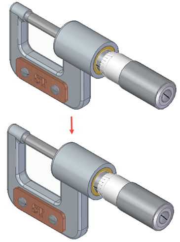
In the next few steps, edit the anvil end of the frame in the context of the assembly, as shown.
Also learn how to show and hide parts using PathFinder.
The Select command should be active. If not, press Esc.

In PathFinder, click the Expand/Collapse button adjacent to the SpindleSub1.asm entry to expand the entry to display the list of parts in the subassembly.
Position the cursor over the Show/Hide button adjacent to the Spindle1.par entry, and then click to hide the part.
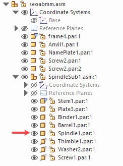
In the graphics window, notice that the spindle part is hidden.
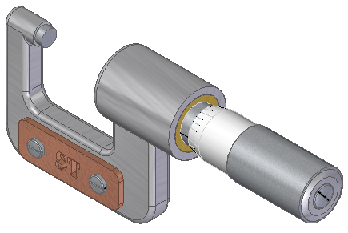
The Select command should be active. If not, press Esc.

In PathFinder, position the cursor over the frame4.par entry, and then click.
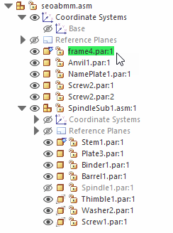
On the context toolbar, click the Edit button.
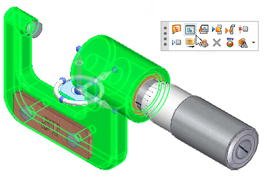
In the graphics window, notice that the part opens in the ordered environment so that you can edit it.
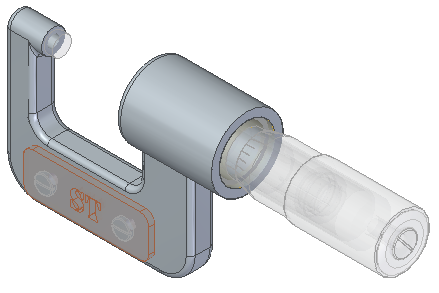
In PathFinder, position the cursor over the Protrusion 1 entry, and then click.
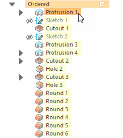
Click the Dynamic Edit button.
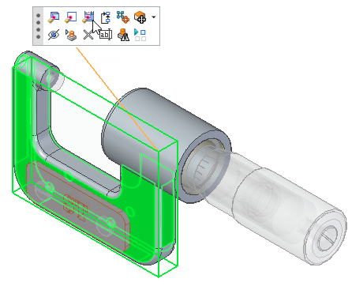
The dimensions for the protrusion are displayed.
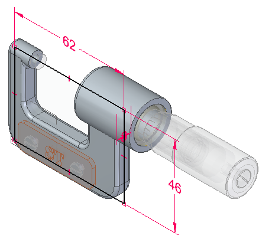
Click the dimension as shown.
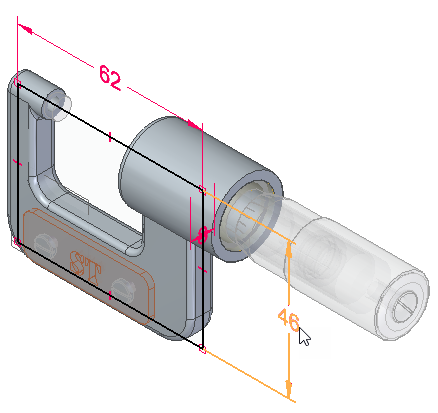
In the Dimension Value box, type 52 and click.
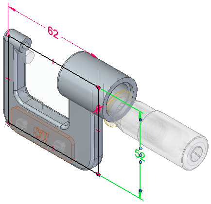
Click to update the dimension.
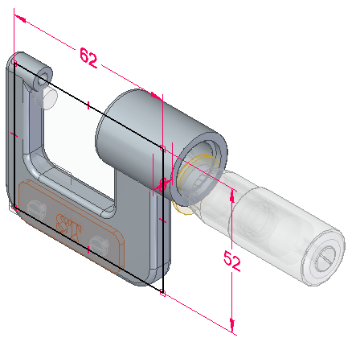
On the Quick Access toolbar, choose Save  .
.
Click the Close and Return button .
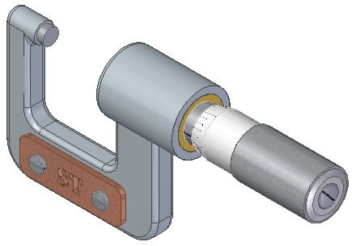
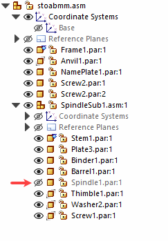
In PathFinder, position the cursor over the Show/Hide button adjacent to the Spindle1.par entry, then click to redisplay the spindle part.
In the graphics window, notice that the spindle part displays again.
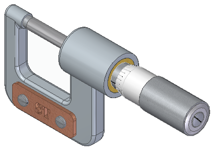
On the Quick Access toolbar, choose Save  .
.
You are finished modifying the assembly by moving faces within a part in the assembly.